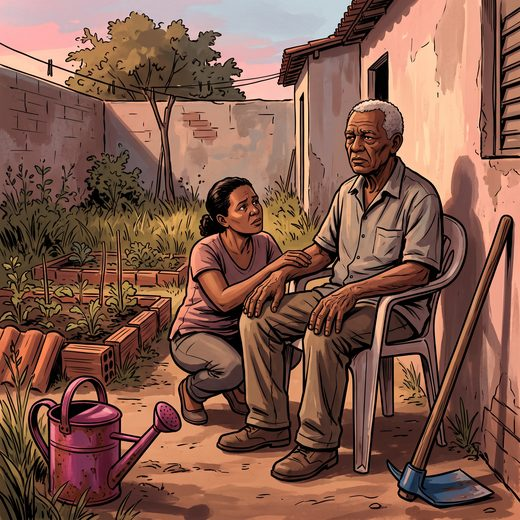

Consulta rápida à beira do leito
Condutas, doses e interações.
Referências da aula · 7
- Duering M, Biessels GJ, Brodtmann A, et al. Neuroimaging standards for research into small vessel disease: advances since 2013. Lancet Neurol. 2023;22(7):602-18. PMID 37236211. doi:10.1016/S1474-4422(23)00131-X.PubMedDOI
- Wardlaw JM, Smith C, Dichgans M. Small vessel disease: mechanisms and clinical implications. Lancet Neurol. 2019;18(7):684-96. PMID 31097385. doi:10.1016/S1474-4422(19)30079-1.PubMedDOI
- VasCog-2-WSO Criteria Consortium; Sachdev PS, et al. Revised diagnostic criteria for vascular cognitive impairment and dementia: the VasCog-2-WSO criteria. JAMA Neurol. 2025;82(11):1103-12. PMID 40955506. doi:10.1001/jamaneurol.2025.3242.PubMedDOI
- Skrobot OA, Black SE, Chen C, et al. Progress toward standardized diagnosis of vascular cognitive impairment: guidelines from the Vascular Impairment of Cognition Classification Consensus Study. Alzheimers Dement. 2018;14(3):280-92. PMID 29055812. doi:10.1016/j.jalz.2017.09.007.PubMedDOI
- Fazekas F, Chawluk JB, Alavi A, Hurtig HI, Zimmerman RA. MR signal abnormalities at 1.5 T in Alzheimer's dementia and normal aging. AJR Am J Roentgenol. 1987;149(2):351-6. PMID 3496763. doi:10.2214/ajr.149.2.351.PubMedDOI
- Chabriat H, Joutel A, Dichgans M, Tournier-Lasserve E, Bousser MG. CADASIL. Lancet Neurol. 2009;8(7):643-53. PMID 19539236. doi:10.1016/S1474-4422(09)70127-9.PubMedDOI
- American Psychiatric Association. Diagnostic and Statistical Manual of Mental Disorders, Fifth Edition, Text Revision (DSM-5-TR). Washington, DC: APA; 2022.
Documentos oficiais
Leis e publicações do Ministério da Saúde sobre o cuidado da pessoa idosa, de acesso livre.
Abrir os documentos